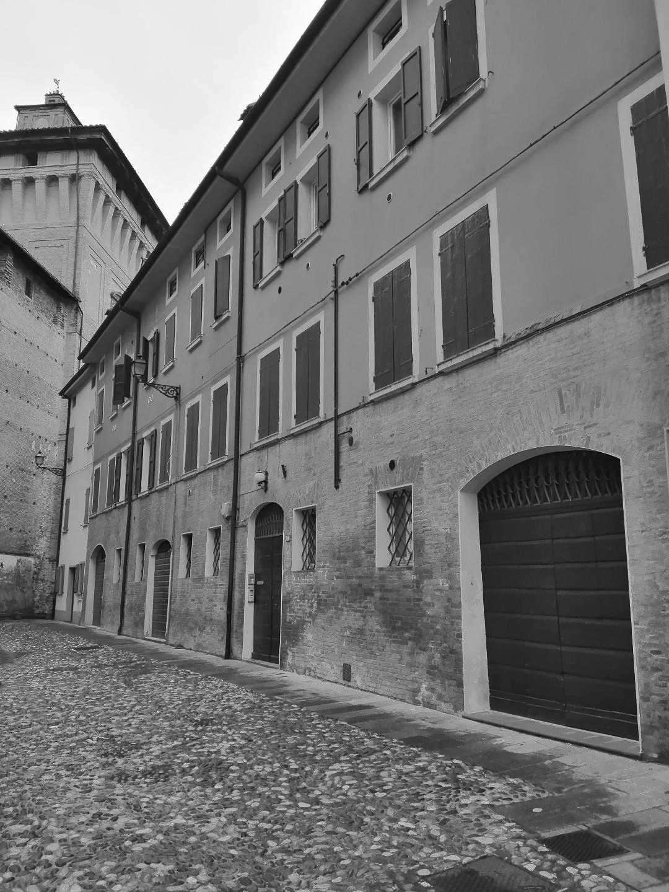
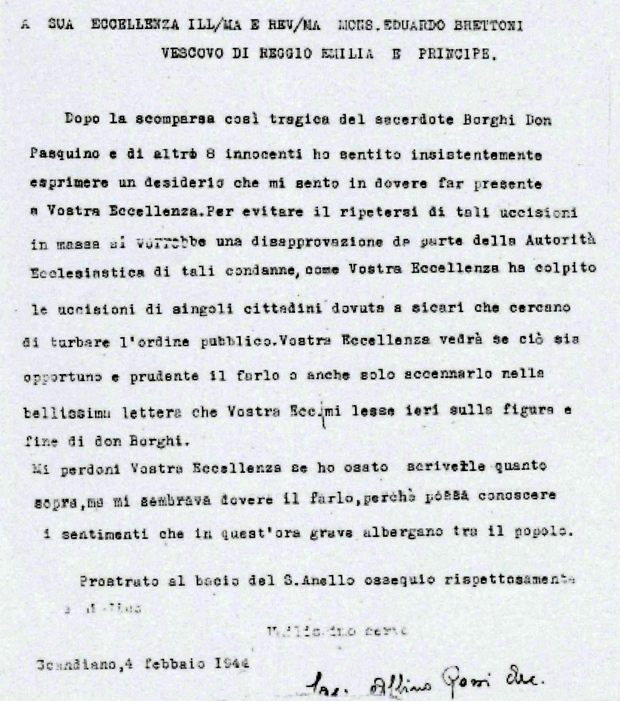

TAPPA 7: Piazza M. M. Boiardo 7
7.1 - Don Pasquino Borghi

In piazza Boiardo, sulla destra della Rocca dei Boiardo, in un edificio ancora caratterizzato da spesse inferriate, si trovava il carcere mandamentale, dove furono detenuti molti antifascisti e “sovversivi” scandianesi e della zona.
Nel gennaio 1944, dopo l’arresto avvenuto il 21 nella sua parrocchia di Tapignola a Villa Minozzo, fu incarcerato qui Don PASQUINO BORGHI prima di essere trasferito nel carcere di Reggio Emilia. Don Pasquino era nato nel 1903 a Bibbiano da una famiglia di poveri mezzadri e aveva preso i voti nel 1930 dopo il servizio militare, fu missionario poi sacerdote in Sudan, curato a Canolo di Correggio, poi parroco a Coriano di Villa Minozzo. Dopo l’8 settembre cominciò a collaborare con il C.L.N. (Comitato di Liberazione Nazionale) accogliendo i militari in fuga, i prigionieri alleati e quanti arrivavano in montagna per unirsi ai partigiani, inoltre sostenne uno dei primi raggruppamenti partigiani: la “Banda” dei Fratelli Cervi. Pure lui diventò partigiano con il nome di Albertario.
Fu amico e poi collaboratore di un altro sacerdote, Don Domenico Orlandini, “Carlo”, il quale fondò con altri partigiani la Brigata “Fiamme Verdi”, di ispirazione cattolica, una delle componenti fondamentali della Resistenza reggiana e del C.L.N. provinciale.
Don Pasquino Borghi fu condannato a morte dal Tribunale Speciale della Repubblica Sociale Italiana, la “Repubblica” di Salò. Fu fucilato al poligono di tiro di Reggio Emilia dai militi della Guardia Repubblicana il 30 gennaio 1944, insieme ad altri 8 antifascisti, tra i quali il noto anarchico di Villa Minozzo, Enrico Zambonini. Nello stesso luogo, un mese prima, il 28 dicembre 1943 erano stati fucilati i sette fratelli Cervi, a cui don Pasquino aveva dato ospitalità in montagna, sostenendone la scelta di resistenza al nazifascismo.
Presentendo forse l'imminenza della propria morte, aveva scritto questa lettera al suo Vescovo:
“Eccellenza Rev.ma, Le scrivo in fretta: debbo allontanarmi, pur senza lasciare la mia parrocchia. Mi eclisso per non andare in domo Petri.
E’ stato catturato l’Arciprete di Gozzano. Verranno prestissimo con l’intento di catturare me o l’Arciprete di Minozzo. Ignoro perfettamente i motivi di tali odiosissime misure a mio riguardo. So che sono uscite dal Fascio Repubblicano di Villaminozzo. Sono perfettamente tranquillo. Non chiedo alla Eccellenza Vostra che la paterna benedizione. Ho l’impressione che stiamo tornando ai tempi delle Catacombe.
Ad ogni modo fiat voluntas Dei. Mi benedica. Dev.mo ed umilissimo servo
Tapignola, 27-12-43
Sac. Pasquino Borghi Rettore”
A seguito dell'uccisione di don Pasquino Borghi, don Albino Rossi, allora giovane sacerdote della parrocchia di Scandiano e, insieme ad altri, organizzatore della Resistenza cattolica scandianese, scrisse una lettera al Vescovo di Reggio, Eduardo Brettoni, il 4 febbraio 1944, conservata nell'archivio vescovile, nella quale chiede una presa di posizione più netta da parte della Chiesa reggiana contro le violenze fasciste.
Nel gennaio 1944, dopo l’arresto avvenuto il 21 nella sua parrocchia di Tapignola a Villa Minozzo, fu incarcerato qui Don PASQUINO BORGHI prima di essere trasferito nel carcere di Reggio Emilia. Don Pasquino era nato nel 1903 a Bibbiano da una famiglia di poveri mezzadri e aveva preso i voti nel 1930 dopo il servizio militare, fu missionario poi sacerdote in Sudan, curato a Canolo di Correggio, poi parroco a Coriano di Villa Minozzo. Dopo l’8 settembre cominciò a collaborare con il C.L.N. (Comitato di Liberazione Nazionale) accogliendo i militari in fuga, i prigionieri alleati e quanti arrivavano in montagna per unirsi ai partigiani, inoltre sostenne uno dei primi raggruppamenti partigiani: la “Banda” dei Fratelli Cervi. Pure lui diventò partigiano con il nome di Albertario.
Fu amico e poi collaboratore di un altro sacerdote, Don Domenico Orlandini, “Carlo”, il quale fondò con altri partigiani la Brigata “Fiamme Verdi”, di ispirazione cattolica, una delle componenti fondamentali della Resistenza reggiana e del C.L.N. provinciale.
Don Pasquino Borghi fu condannato a morte dal Tribunale Speciale della Repubblica Sociale Italiana, la “Repubblica” di Salò. Fu fucilato al poligono di tiro di Reggio Emilia dai militi della Guardia Repubblicana il 30 gennaio 1944, insieme ad altri 8 antifascisti, tra i quali il noto anarchico di Villa Minozzo, Enrico Zambonini. Nello stesso luogo, un mese prima, il 28 dicembre 1943 erano stati fucilati i sette fratelli Cervi, a cui don Pasquino aveva dato ospitalità in montagna, sostenendone la scelta di resistenza al nazifascismo.
Presentendo forse l'imminenza della propria morte, aveva scritto questa lettera al suo Vescovo:
“Eccellenza Rev.ma, Le scrivo in fretta: debbo allontanarmi, pur senza lasciare la mia parrocchia. Mi eclisso per non andare in domo Petri.
E’ stato catturato l’Arciprete di Gozzano. Verranno prestissimo con l’intento di catturare me o l’Arciprete di Minozzo. Ignoro perfettamente i motivi di tali odiosissime misure a mio riguardo. So che sono uscite dal Fascio Repubblicano di Villaminozzo. Sono perfettamente tranquillo. Non chiedo alla Eccellenza Vostra che la paterna benedizione. Ho l’impressione che stiamo tornando ai tempi delle Catacombe.
Ad ogni modo fiat voluntas Dei. Mi benedica. Dev.mo ed umilissimo servo
Tapignola, 27-12-43
Sac. Pasquino Borghi Rettore”
A seguito dell'uccisione di don Pasquino Borghi, don Albino Rossi, allora giovane sacerdote della parrocchia di Scandiano e, insieme ad altri, organizzatore della Resistenza cattolica scandianese, scrisse una lettera al Vescovo di Reggio, Eduardo Brettoni, il 4 febbraio 1944, conservata nell'archivio vescovile, nella quale chiede una presa di posizione più netta da parte della Chiesa reggiana contro le violenze fasciste.
